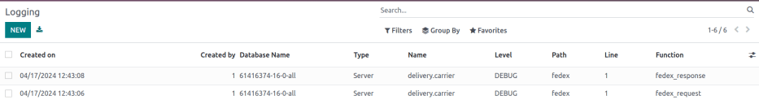

Transportistas externos¶
Users can link third-party shipping carriers to Odoo databases, in order to verify carriers” delivery to specific addresses, automatically calculate shipping costs, and generate shipping labels.
En Odoo, los transportistas se pueden aplicar a una orden de venta, una factura o una orden de entrega. Para consejos sobre cómo resolver problemas comunes al configurar los conectores de envío, vaya a la sección de Solución de errores.
Ver también
A continuación se le presenta una lista de conectores de transportistas disponibles en Odoo:
Transportista |
Disponibilidad por región |
|---|---|
FedEx |
Todos |
Todos |
|
Todos |
|
Servicio Postal de los Estados Unidos |
Estados Unidos |
Unión Europea |
|
Bpost |
Bélgica |
Easypost |
América del Norte |
Shiprocket |
India |
Configuración¶
Para asegurarse de configurar bien un transportista externo con Odoo siga estas instrucciones:
Instalar conectores de envío¶
Para instalar conectores de envío, vaya a .
En la sección Conectores de envío marque la casilla a un lado del transportista externo para instalarlo. Puede seleccionar varios conectores de envío al mismo tiempo. Al finalizar, haga clic en Guardar.
Nota
Los métodos de envío también pueden integrarse a las operaciones de las aplicaciones Ventas, Comercio electrónico y Sitio web. Consulte la documentación de instalación de aplicaciones y módulos para obtener más información sobre su instalación.

Método de envío¶
Para configurar las credenciales de la API y activar el transportista de envío, primero vaya a y seleccione el método correspondiente.
Nota
Por lo general, la lista incluye dos métodos de envío del mismo proveedor: uno para envíos internacionales y otro para envíos nacionales.
Es posible crear métodos de envío adicionales para fines específicos, como empaquetado.
Ver también
Nota
Asegúrese de que el método de envío esté publicado al mismo tiempo que deba estar disponible en la aplicación Sitio web. Para publicar un método de envío en el sitio web, haga clic en el método de entrega deseado, después haga clic en el botón inteligente Sin publicar. Al hacerlo, el botón inteligente cambiará a ser: Publicado.
La página Método de envío contiene detalles sobre el proveedor, incluyendo:
Método de envío (campo obligatorio): el nombre del método de envío (por ejemplo,
FedEx US,FedEx EU, etc.).Sitio web: configure métodos de envío para una página de comercio electrónico que esté conectada a un sitio web específico de la base de datos. Seleccione el sitio web aplicable en el menú desplegable o déjelo vacío para aplicar el método a todas las páginas web.
Proveedor (obligatorio): seleccione el transportista externo, por ejemplo FedEx. Al elegir un proveedor, los campos Nivel de integración, Política de facturación y Porcentaje del seguro estarán disponibles.
Nivel de integración: seleccione Obtener tarifa para obtener un costo estimado de envío en una |orden de venta| o una factura.
Importante
Select Get Rate and Create Shipment to also generate shipping labels.
Empresa: si el método de envío debe aplicarse a una empresa en específico, selecciónela en el menú desplegable. Deje el campo vacío para aplicar ese método a todas las empresas.
Producto de envío (obligatorio): el cargo por envío que se agrega a la |orden de venta| o a la factura.
Política de facturación: seleccione y calcule un Costo estimado del envío directamente con el transportista. Si prefiere ver el Costo real de envío, consulte este documento sobre cómo facturar costos de envío reales.
Margen o tarifa: especifique un porcentaje adicional que se agregue a la tarifa base de envío para cubrir costos adicionales, como tarifas de transporte, materiales de embalaje, tasas de cambio, etc.
Gratuito si el importe de la orden es superior a: activa el envío gratis para órdenes que pasen la cantidad ingresada en el campo cantidad.
Porcentaje del seguro: especifique el porcentaje de una cantidad de los costos de envío que se le reembolsará si el paquete se pierde o se roba durante el transito.
Página de configuración del método de envío para FedEx US.¶
En la pestaña Configuración, llene los campos de las credenciales del API (por ejemplo, la llave, contraseña, número de cuenta, etc. del API). Dependiendo del transportista externo que seleccionó en el campo Proveedor, la pestaña de Configuración contendrá diferentes campos obligatorios. Para más detalles sobre la configuración de las credenciales de transportistas específicos, consulte la siguiente documentación:
Entorno de producción¶
Una vez configurados los detalles del método de entrega, haga clic en el botón inteligente Entorno de prueba para cambiarlo a Entorno de producción.
Advertencia
Configurar el método de entrega a Producción crea etiquetas de envío reales, y los usuarios corren el riesgo de que se les cobre a través de su cuenta de transportista (por ejemplo, UPS, FedEx, etc.) antes de que los usuarios cobren a los clientes por el envío. Verifique que todas las configuraciones sean las correctas antes de lanzar el método de envío a Producción.
Configuración del almacén¶
Asegúrese de que la dirección del almacén (incluido el código postal) y el número de teléfono sean correctos. Para ello, vaya a y seleccione el almacén deseado.
En la página de configuración del almacén, abra la página de contacto del almacén haciendo clic en el campo Empresa.

Verifique que la dirección y el teléfono sean correctos, son necesarios para que el conector de envío funcione de forma adecuada.

Peso del producto¶
Para que la integración del transportista funcione bien, especifique el peso de los productos en y seleccione un producto deseado.
Después, vaya a la pestaña Inventario y defina el peso del producto en la sección Logística.
Aplicar transportistas externos para envíos¶
Es posible aplicar transportistas a una orden de venta, una factura o una orden de envío.
Después de configurar el método de envío del transportista externo en Odoo, vaya a para crear o elegir una cotización.
Orden de venta¶
Para asignar un transportista y obtener el costo estimado de un envío, vaya a . Cree o seleccione alguna de las cotizaciones y agregue el costo de envío del transportista externo a ella, haga clic en el botón Agregar envío que se ubica en la esquina inferior derecha de la pestaña Líneas de la orden.

Esta acción abrirá la ventana emergente Agregar un método de envío, allí seleccione el transportista correspondiente con el menú desplegable Método de envío. El campo Costo se completa en automático según:
La cantidad especificada en el campo Peso total de la orden (si no se proporciona, se utiliza la suma del peso de los productos en la orden).
La distancia entre la dirección de origen del almacén y la dirección del cliente.
Luego de elegir un transportista externo en el campo Método de envío, haga clic en Obtener tarifa en la ventana Agregar un método de envío para obtener el costo estimado mediante el conector de envío. Después, haga clic en el botón Agregar para agregar el cargo por el envío a la orden de venta o a la factura.
Orden de envío¶
Para que los usuarios hagan envíos sin instalar la aplicación Ventas, asigne un transportista a la orden de envío correspondiente en la aplicación . Luego, desde el tablero de información general de Inventario, elija el tipo de operación Órdenes de entrega y seleccione la orden correspondiente que no esté marcada como Hecho o Cancelado.
En la pestaña Información adicional, seleccione un transportista en el campo correspondiente. Se proporciona una referencia de rastreo cuando el método está configurado como modo de producción.
Ver también

Solución de problemas¶
En algunos casos puede ser complicado configurar conectores de envío, las siguientes son algunas de las cosas que puede comprobar cuando funcionan de manera distinta a la esperada:
Asegúrese de que la información del almacén (la dirección y el número telefónico, por ejemplo) en Odoo es correcta y que coincide con los registros almacenados en el sitio web del proveedor de envío.
Verifique que el tipo de paquete y los parámetros son válidos para el transportista. Para comprobar esto, asegúrese de que es posible crear el envío directo desde el sitio web del transportista.
En caso de que haya una discrepancia en el precio entre el costo estimado de Odoo y el cargo del proveedor, primero asegúrese de que el método de envío corresponde al entorno de producción.
Cree el envío en el sitio web del transportista y en Odoo. Verifique que los precios sean iguales en Odoo, el proveedor de envíos y los registros de depuración.
Example
Si al verificar la diferencia de precios en los registros de depuración, la solicitud dice que el paquete pesa seis kilogramos, pero la respuesta de FedEx dice que el paquete pesa siete kilogramos, concluye que el error es de FedEx.
Registro de depuración¶
Active el registro de depuración para llevar registro de las inconsistencias en la información de envío. Vaya a la página de configuración del método de envío () y seleccione uno. Haga clic en el botón inteligente Sin depuración para activar las solicitudes de depuración.

Después de que haya activado las solicitudes de depuración, los registros se guardarán en el reporte de registro cada que use el conector de envío para estimar el costo de envío. Para acceder al reporte, active el modo de desarrollador y vaya a .
Nota
Se crean registros para un método de envío cada que hace clic en el botón Obtener tarifa en las órdenes de venta y las facturas, y cuando un cliente agrega el transportista de envío a su orden a través de la aplicación Sitio web.

Haga clic en el elemento de línea solicitud HTTP para abrir una página detallada y verifique que Odoo enviará la información correcta al transportista. En la respuesta HTTP, verifique que se reciba la misma información.
